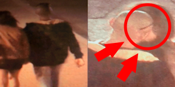

Bienvenidos a la Chambonería®,
La página mas mediocre de latinoamérica y ¡el mundo entero!
Bienvenidos a la Chambonería®,
La página mas mediocre de latinoamérica y ¡el mundo entero!
¡La detonaron y le detonaron el carro!Dos amantes quienes se encontraban en una escena romántica en medio de la calle fueron captados la noche del 15 de Agosto saliendo del hotel Macondo en Bogotá sin percatarse de que una cámara los estaba grabando a ambos en el momento. Quien estaba detrás de las cámaras (cuya identidad no vamos a revelar por protección) identificó a la chica como la pareja de un amigo suyo e inmediatamente empezó a grabar para posteriormente enviar las grabaciones a su amigo. El amigo en llamada empezó a sufrir un ataque de histeria el cual culminó con declaraciones del amigo jurando que se iba a vengar. |
"Eeeeeeeh... No sé de que me habla"Esa fue la respuesta del representante a la cámara [Censurado debido a denuncia por difamación] del partido [Censurado debido a denuncia por difamación] cuando se le preguntó por su aparente vinculación en un caso de corrupción en el cual funcionarios públicos, cuyas identidades no han sido descubiertas, habrían robado más de 20 mil millones de pesos que eran destinados para la construcción de hospitales y redes de telecomunicaciones a lo largo del país. |
Se inyectó alas para volar... y murióEn Brazil, un chico estaba aburrido en su casa, quería probar el cómo se sentía estar bajo los efectos de algún alusinójeno o psicotrópico. Entonces, al ver que en internet había gente drogándose lamiendo sapos, pensó que sería buena idea inyectarse algún animal para poder sentir los mismos efectos, buscó en su habitación algún animal y encontró una maripos, la aplastó la metió en una jeringa y se la inyectó en la pierna. |